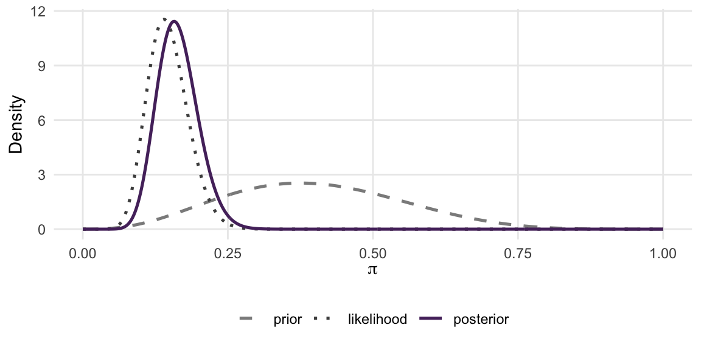
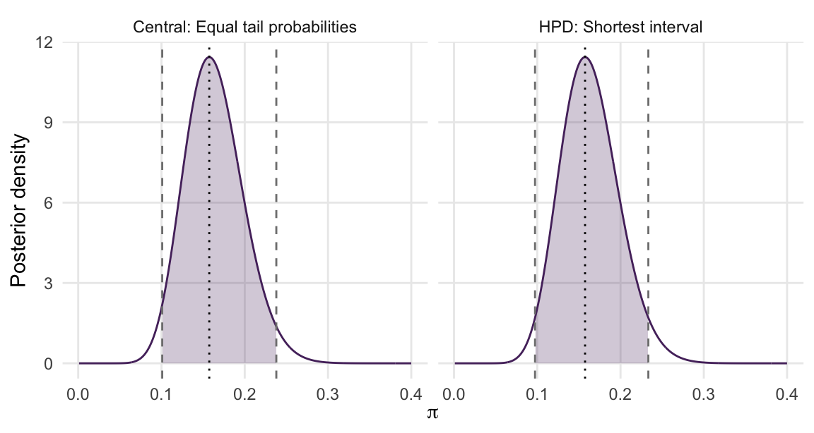
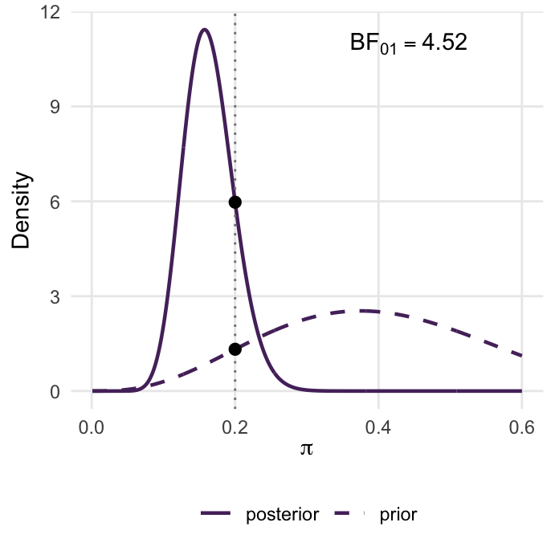
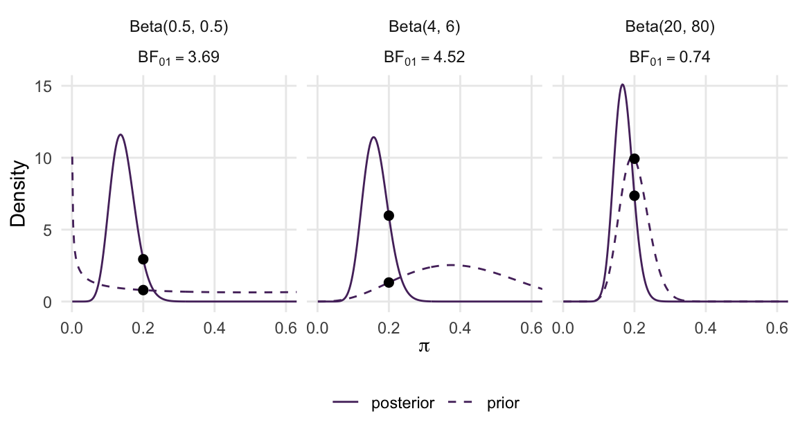
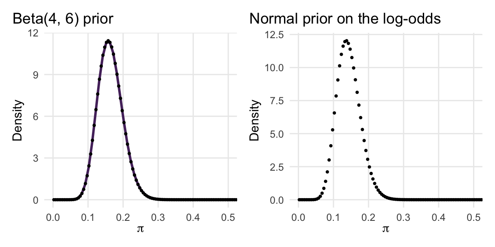
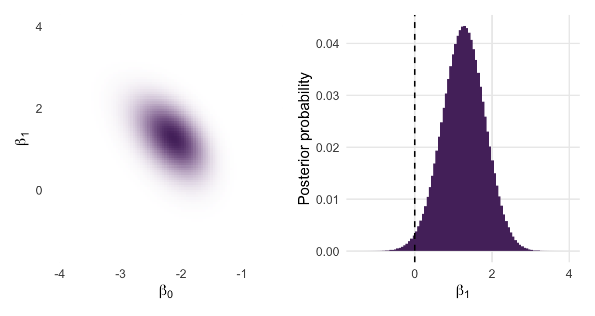
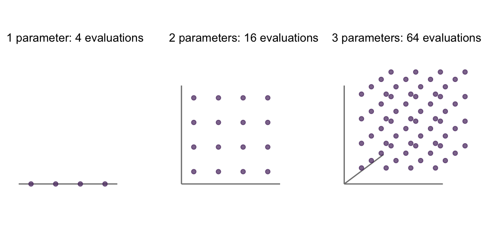
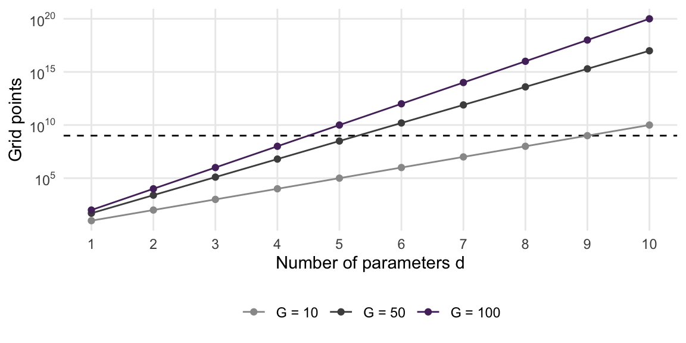

library(tidyverse)
library(patchwork)
library(bayesrules)2 Bayesian Inference, Revisited
The Museum of Modern Art (MoMA) in New York holds work by artists from many generations. Suppose you want to estimate the proportion of artists in its collection who were born in 1965 or later, classified here as Generation X or younger. The moma_sample data in the bayesrules R package contain a random sample of 100 artists and a variable recording this classification. In Bayes Rules!, these data illustrate inference for an unknown proportion using a Beta prior, a Binomial likelihood, and a Beta posterior available in closed form (Johnson et al., 2022, Chapter 8).
This chapter examines the calculation behind that update. Bayes’ rule combines a prior and a likelihood, then divides by a normalizing constant to obtain a posterior distribution. For some models, we can identify the posterior as a familiar distribution. For others, we must approximate it. We will use both approaches to estimate the proportion, summarize its uncertainty, and compare models for the data.
For further background on Bayesian models and posterior summaries, see Bayes Rules! (Johnson et al., 2022, Chapters 3–5 and 8). Run the following setup before working through the examples. As in Chapter 1, \(n\) denotes the number of observed data points and \(N\) the number of Monte Carlo draws.
Goals
- Explain the roles of the prior, likelihood, posterior, and normalizing constant in Bayes’ rule.
- Write the unnormalized posterior as a
log_posterior()function in R, a habit that every later chapter relies on. - Recognize when the posterior is available in closed form (conjugacy, kernel recognition) and when it is not.
- Compute posterior means, credible intervals, and interval probabilities using formulas and posterior draws.
- Define the marginal likelihood, the Bayes factor, and posterior model probabilities, and compute a Bayes factor for a point hypothesis with the Savage–Dickey density ratio.
- Implement grid approximation in one and two dimensions and explain how its computational cost grows with the number of parameters.
2.1 Prior, likelihood, posterior
Let \(\theta\) denote an unknown parameter, or a vector of parameters, and let \(y\) denote the observed data. The prior density \(f(\theta)\) describes uncertainty before observing these data. The sampling model specifies the distribution of possible data given \(\theta\). With \(y\) fixed at its observed value, its probability mass or density \(f(y\mid\theta)\) is the likelihood, viewed as a function of \(\theta\). The posterior density \(f(\theta\mid y)\) describes uncertainty after observing \(y\). Bayes’ rule says that the posterior density is \[ f(\theta \mid y) = \frac{f(y \mid \theta)\, f(\theta)}{f(y)}, \qquad f(y) = \int f(y \mid \theta)\, f(\theta)\, d\theta. \tag{2.1}\] The numerator multiplies the likelihood by the prior. It assigns relatively large values to parameter values supported by both. The symbol \(\propto\) means “proportional to”, so we can write \[ f(\theta\mid y)\propto f(y\mid\theta)f(\theta). \] The right-hand side is the unnormalized posterior. Its integral need not be one. Dividing it by its integral, \(f(y)\) in Equation 2.1, produces a density with total area one.
The data \(y\) are held fixed throughout this calculation, so \(f(y)\) is a single number rather than a function of \(\theta\). It is called the normalizing constant or marginal likelihood. For discrete data, it is the prior predictive probability of observing \(y\). For continuous data, it is a prior predictive density at \(y\), which can exceed one.
When we evaluate the posterior at two parameter values, this constant cancels in their ratio. This is useful when the likelihood and prior can be evaluated but the integral over \(\theta\) is difficult. We can then compare posterior heights without calculating the constant. Later in the chapter we will see why model comparison sometimes requires that constant, or an equivalent calculation.
2.1.1 The modern art example
Let’s set up the running example. Of the 100 sampled artists, 14 are Gen X or younger:
moma_sample |>
count(genx)
#> genx n
#> 1 FALSE 86
#> 2 TRUE 14
y <- sum(moma_sample$genx)
n <- nrow(moma_sample)We use a Binomial sampling model, \(Y\mid\pi\sim\text{Bin}(n,\pi)\), treating the classifications as independent observations with a common probability \(\pi\). We assign \(\pi\) a \(\text{Beta}(4,6)\) prior, with mean \(4/(4+6)=0.4\). This prior describes uncertainty about the proportion in the collection; it does not assert that the observed sample proportion will be exactly 0.4. Combining the Binomial likelihood and Beta prior gives \[ f(\pi \mid y) \propto \binom{n}{y} \pi^{y} (1 - \pi)^{n - y} \times \frac{\pi^{3} (1 - \pi)^{5}}{B(4, 6)}. \]
The factor \(\binom{n}{y}\) is the Binomial coefficient, and \(B(4,6)\) normalizes the Beta prior. Both are constant with respect to \(\pi\). They affect the overall scale of the numerator but not which values of \(\pi\) have higher posterior density. We will visualize the prior, likelihood, and posterior in Figure 2.1 after identifying the posterior distribution.
2.1.2 The log-scale habit
For numerical calculations, we write a function that returns the logarithm of the unnormalized posterior: \[
\log f(\pi \mid y) = \log f(y \mid \pi) + \log f(\pi) + \text{constant}.
\] On the log scale the product becomes a sum, and R’s d* functions compute each term with log = TRUE:
log_posterior <- function(pi) {
dbinom(y, size = n, prob = pi, log = TRUE) + # log likelihood
dbeta(pi, 4, 6, log = TRUE) # log prior
}
log_posterior(0.15)
#> [1] -2.49048
log_posterior(0.5)
#> [1] -30.31011Throughout this book, log_posterior() returns the unnormalized log posterior, calculated as the log likelihood plus the log prior.
The two values returned above are negative for this particular calculation. Log densities need not always be negative, because densities can exceed one. To compare posterior heights, subtract the two log values and exponentiate: \[ \frac{f(0.15\mid y)}{f(0.5\mid y)} =\exp\!\left[\texttt{log\_posterior}(0.15)-\texttt{log\_posterior}(0.5)\right]. \] The resulting ratio is approximately 1,200,000,000,000. It compares densities at two points; it is not a ratio of probabilities assigned to those individual points.
The log scale helps prevent numerical underflow. If we record each artist’s classification separately, the joint likelihood is a product of Bernoulli probabilities. For a hypothetical sample of 10,000 artists, with 1,400 classified as Gen X or younger, this product becomes too small for the computer to represent:
y_big <- rep(c(1, 0), times = c(1400, 8600)) # 10,000 artists, 14% Gen X
prod(dbinom(y_big, size = 1, prob = 0.2)) # raw scale
#> [1] 0
sum(dbinom(y_big, size = 1, prob = 0.2, log = TRUE)) # log scale
#> [1] -4172.248On the raw scale the likelihood underflows to exactly zero, so a ratio of two such rounded likelihoods could become 0/0. On the log scale it is a sum of ten thousand moderate numbers, and the result remains representable. The same construction applies to other models. Add the log likelihood terms and the log prior terms, leaving out the posterior normalizing constant.
Bayes' rule, computationally
The posterior is \(f(\theta\mid y)=f(y\mid\theta)f(\theta)/f(y)\). In the models studied here, we can evaluate the likelihood and prior at a specified parameter value. Integrating their product may be much harder.
log_posterior(theta)returns the log likelihood plus the log prior.- Differences between its values give log ratios of posterior densities.
- Its integral on the original scale equals \(f(y)\) only when the full likelihood and normalized prior have been retained. Dropping additional constants preserves the posterior’s shape but changes that integral.
Posterior sampling can use relative heights; model comparison requires careful treatment of constants.
Quiz yourself!
Two students calculate log_posterior() for the modern art data. One uses dbinom(y, n, pi, log = TRUE), which includes the binomial coefficient \(\log \binom{n}{y}\); the other writes the Bernoulli likelihood as y * log(pi) + (n - y) * log(1 - pi), which does not. Their functions return different numbers. Do they describe different posteriors?
2.2 Conjugate families and kernel recognition
A prior family is conjugate to a sampling model when updating with that model leaves the posterior in the same family. This lets us identify a normalized posterior without numerically integrating it.
To see this, collect the terms in the unnormalized log posterior that depend on the parameter. An additive term independent of the parameter can be represented by \(C\). Matching the remaining expression to the log density of a known family is called kernel recognition.
For the modern art data, the log likelihood and log prior combine as \[ \begin{aligned} \log f(\pi\mid y) &=y\log\pi+(n-y)\log(1-\pi) +3\log\pi+5\log(1-\pi)+C\\ &=(y+4-1)\log\pi+(n-y+6-1)\log(1-\pi)+C. \end{aligned} \] The Beta\((a,b)\) log density has the form \((a-1)\log\pi+(b-1)\log(1-\pi)-\log B(a,b)\). Comparing coefficients gives \[ \pi\mid y\sim\text{Beta}(y+4,n-y+6) =\text{Beta}(18,92). \] Thus the normalized posterior is available through R’s Beta functions. The Beta function \(B(y+4,n-y+6)\) normalizes the kernel \(\pi^{y+3}(1-\pi)^{n-y+5}\). The marginal likelihood of the original model also includes the constants from the likelihood and prior; we calculate it in the section on model comparison.
The three conjugate pairs in Table 2.1 can each be obtained by collecting terms in this way. The Gamma distribution uses shape and rate parameters; the second parameter of a Normal distribution in mathematical notation is its variance. In the Normal row, \(\theta\) and \(\tau^2\) are the prior mean and variance, \(\bar y\) is the sample mean, and \(\sigma^2\) is the known sampling variance. R’s dnorm() uses a standard deviation for its sd argument. Exercise 2.2 develops the Poisson and Normal cases.
| Likelihood | Prior | Posterior |
|---|---|---|
| \(Y \mid \pi \sim \text{Bin}(n, \pi)\) | \(\pi \sim \text{Beta}(\alpha, \beta)\) | \(\text{Beta}(\alpha + y,\; \beta + n - y)\) |
| \(Y_i \mid \lambda \sim \text{Pois}(\lambda)\), \(i = 1, \ldots, n\) | \(\lambda \sim \text{Gamma}(s, r)\) | \(\text{Gamma}(s + \sum_i y_i,\; r + n)\) |
| \(Y_i \mid \mu \sim \text{N}(\mu, \sigma^2)\), \(\sigma\) known | \(\mu \sim \text{N}(\theta, \tau^2)\) | \(\text{N}\!\left(\dfrac{\theta/\tau^2 + n\bar{y}/\sigma^2}{1/\tau^2 + n/\sigma^2},\; \dfrac{1}{1/\tau^2 + n/\sigma^2}\right)\) |
Appendix D works through each derivation step by step, including the completion of the square in the Normal case, and illustrates how the posterior parameters combine prior information with the data.
Figure 2.1 displays the Beta update. The code evaluates each curve on the same grid. To compare their shapes, the likelihood is rescaled to have area one as a function of \(\pi\); this plotting choice does not turn the likelihood into a prior or a posterior. The posterior combines the likelihood with the prior and is shifted slightly toward the prior mean.
pi_plot <- seq(0, 1, length.out = 501)
delta <- pi_plot[2] - pi_plot[1]
lik <- dbinom(y, n, pi_plot)
tibble(pi = pi_plot,
prior = dbeta(pi_plot, 4, 6),
likelihood = lik / sum(lik * delta),
posterior = dbeta(pi_plot, y + 4, n - y + 6)) |>
pivot_longer(-pi, names_to = "curve", values_to = "density") |>
mutate(curve = factor(curve, levels = c("prior", "likelihood", "posterior"))) |>
ggplot(aes(pi, density, color = curve, linetype = curve)) +
geom_line(linewidth = 0.9) +
scale_color_manual(values = c(prior = "gray55", likelihood = "gray30", posterior = "#552E6B"), name = NULL) +
scale_linetype_manual(values = c(prior = "dashed", likelihood = "dotted", posterior = "solid"), name = NULL) +
labs(x = expression(pi), y = "Density")
Kernel recognition
To identify a conjugate posterior:
- Add the log likelihood and log prior.
- Collect terms involving the parameter and group all other terms into \(C\).
- Match the result to a known log density and identify its parameters, as in the Beta derivation and Table 2.1.
If no familiar kernel is apparent, this recognition method has not supplied a closed-form posterior. Numerical integration or sampling may still be possible.
A different prior can produce a posterior outside the conjugate family. Suppose we place a Normal prior on the log-odds, \[
z=\log\frac{\pi}{1-\pi},\qquad z\sim\text{N}(-1.5,1^2).
\] The odds \(\pi/(1-\pi)\) compare success with failure. For \(\pi=0.2\), the odds are \(0.2/0.8=0.25\) and the log-odds are \(\log(0.25)\approx-1.39\). The log-odds transformation takes a probability in \((0,1)\) to a value anywhere on the real line. Its inverse is \(\pi=1/(1+e^{-z})\), implemented by plogis() in R; qlogis() maps in the other direction. The resulting distribution of \(\pi\) is called a logit-Normal distribution.
To express this prior as a density for \(\pi\), we must account for how intervals change under the transformation. A short interval of width \(d\pi\) corresponds to a log-odds interval of width approximately \(|dz/d\pi|d\pi\). Equal probabilities in these corresponding intervals require \[ f_\pi(\pi)=f_z\!\left(\log\frac{\pi}{1-\pi}\right) \left|\frac{dz}{d\pi}\right|, \qquad \frac{dz}{d\pi}=\frac{1}{\pi(1-\pi)}. \] The derivative factor is the Jacobian for this one-dimensional transformation. On the log scale, it contributes \(-\log\pi-\log(1-\pi)\). The following function includes it and returns \(-\infty\) outside \((0,1)\), corresponding to zero posterior density there.
log_posterior_logitnormal <- function(pi) {
lp <- rep(-Inf, length(pi))
inside <- pi > 0 & pi < 1
p <- pi[inside]
lp[inside] <- dbinom(y, size = n, prob = p, log = TRUE) +
dnorm(qlogis(p), mean = -1.5, sd = 1, log = TRUE) -
log(p) - log1p(-p)
lp
}The function evaluates a log posterior even though the result does not have the Beta log-density form. In the grid section, we use these evaluations to approximate its normalized posterior. Chapter 6 (Metropolis–Hastings and Adaptive Proposals) returns to transformations in more detail.
2.3 Summarizing a posterior
A posterior distribution supports several kinds of summary. Means and interval probabilities are expectations, as in Chapter 1. Quantiles locate values below which specified amounts of posterior probability lie. The mode identifies the highest point of the density.
| Summary | Definition | From posterior draws in theta |
|---|---|---|
| Mean | \(E[\theta\mid y]=\int\theta f(\theta\mid y)\,d\theta\) | mean(theta) |
| Variance | \(E[(\theta-E[\theta\mid y])^2\mid y]\) | var(theta) |
| Interval probability | \(P(a<\theta<b\mid y)=E[\mathbb{1}\{a<\theta<b\}\mid y]\) | mean(theta > a & theta < b) |
| Central 95% credible interval | 2.5th and 97.5th posterior percentiles | quantile(theta, c(.025, .975)) |
| Mode | A value maximizing \(f(\theta\mid y)\) | Optimize a density or log density |
The first four rows of Table 2.2 specify the mean, variance, interval probability, and central interval calculations used below. For the modern art model, we can compute these summaries directly from the Beta posterior and compare them with estimates from independent draws. The interval in the code below contains 95% of the posterior probability for \(\pi\); it describes uncertainty about the population proportion.
a <- y + 4
b <- n - y + 6
exact <- c(mean = a / (a + b),
sd = sqrt(a * b / ((a + b)^2 * (a + b + 1))),
lower = qbeta(0.025, a, b),
upper = qbeta(0.975, a, b),
p_below_0.2 = pbeta(0.2, a, b))
exact
#> mean sd lower upper p_below_0.2
#> 0.16363636 0.03511365 0.10090844 0.23792856 0.84898556Now estimate the same summaries from \(N=10{,}000\) independent posterior draws. R’s rbeta() generates them directly because the posterior is a Beta distribution.
set.seed(84735)
N <- 10000
draws <- tibble(pi = rbeta(N, a, b))
draws |>
summarize(mean = mean(pi), sd = sd(pi),
lower = quantile(pi, 0.025), upper = quantile(pi, 0.975),
p_below_0.2 = mean(pi < 0.2))
#> # A tibble: 1 × 5
#> mean sd lower upper p_below_0.2
#> <dbl> <dbl> <dbl> <dbl> <dbl>
#> 1 0.164 0.0353 0.100 0.239 0.845The simulated summaries are close to the exact values, but they vary from run to run. The Monte Carlo standard error of the mean is estimated by sd(draws$pi) / sqrt(N). For the estimated probability \(\hat p=\texttt{mean(draws\$pi < 0.2)}\), use \(\sqrt{\hat p(1-\hat p)/N}\):
p_hat <- mean(draws$pi < 0.2)
c(mean_mcse = sd(draws$pi) / sqrt(N),
probability_mcse = sqrt(p_hat * (1 - p_hat) / N))
#> mean_mcse probability_mcse
#> 0.0003532832 0.0036161846These errors concern the computation of posterior summaries. Increasing \(N\) reduces them without making the underlying posterior distribution narrower. The \(1/\sqrt{N}\) standard-error formula applies to independent averages with finite variance. Quantiles have their own sampling errors; their standard errors are not obtained by substituting a quantile into the formula for a mean.
2.3.1 Credible intervals and the mode
A central 95% credible interval leaves 2.5% of the posterior probability in each tail. Another choice is the highest posterior density (HPD) region, which contains 95% probability using values of highest density. For a continuous, unimodal density such as this Beta posterior, the HPD region is a shortest 95% interval. For a multimodal density, an HPD region can consist of separate intervals.
For the unimodal case, we can approximate a shortest interval from the draws. Sort them, consider every consecutive group containing at least 95% of the draws, and retain the narrowest group. The function below uses ceiling() to determine the required number of draws. Because it searches a finite sample, the result has Monte Carlo error.
hpd <- function(x, level = 0.95) {
x <- sort(x)
n_draws <- length(x)
m <- ceiling(level * n_draws)
stopifnot(level > 0, level < 1, m >= 2, m <= n_draws)
starts <- seq_len(n_draws - m + 1)
ends <- starts + m - 1
i <- which.min(x[ends] - x[starts])
c(lower = x[starts[i]], upper = x[ends[i]])
}
central_interval <- setNames(quantile(draws$pi, c(0.025, 0.975)),
c("lower", "upper"))
hpd_interval <- hpd(draws$pi)
rbind(central = central_interval, shortest = hpd_interval)
#> lower upper
#> central 0.10005397 0.2386363
#> shortest 0.09721451 0.2337647To display the population intervals without sampling noise, the next figure obtains the shortest interval directly from the Beta quantile function. If \(q\) is the probability below its lower endpoint, then the upper endpoint has cumulative probability \(q+0.95\). We choose \(q\) between zero and 0.05 to minimize their distance.
q_lower <- optimize(function(q) qbeta(q + 0.95, a, b) - qbeta(q, a, b),
interval = c(0, 0.05))$minimum
intervals <- tibble(
interval = c("Central: Equal tail probabilities", "HPD: Shortest interval"),
lower = c(qbeta(0.025, a, b), qbeta(q_lower, a, b)),
upper = c(qbeta(0.975, a, b), qbeta(q_lower + 0.95, a, b))
)
intervals |> mutate(width = upper - lower)
#> # A tibble: 2 × 4
#> interval lower upper width
#> <chr> <dbl> <dbl> <dbl>
#> 1 Central: Equal tail probabilities 0.101 0.238 0.137
#> 2 HPD: Shortest interval 0.0973 0.233 0.136
Both intervals in Figure 2.2 describe uncertainty about the same proportion. They differ because they use different rules to allocate the 5% probability left outside. The posterior mode, also called the maximum a posteriori estimate, is the value at the peak. It is a maximization, rather than an expectation or a quantile. For this model, it can be found directly:
mode_pi <- optimize(log_posterior, interval = c(0.001, 0.999), maximum = TRUE)$maximum
c(mode = mode_pi, mean = a / (a + b))
#> mode mean
#> 0.1574135 0.1636364For a continuous posterior, repeated draws almost never have identical values. Counting the most frequent draw therefore does not provide a useful way to estimate the mode.
Quiz yourself!
The museum’s benchmark is a Gen X share between 0.15 and 0.25. Write \(P(0.15 < \pi < 0.25 \mid y)\) as an expectation. How would you estimate it from the 10,000 draws in draws, and roughly how large is the Monte Carlo error of that estimate?
2.4 Comparing models: marginal likelihoods and Bayes factors
So far we have calculated probabilities for ranges of \(\pi\) within one model, such as \(\pi<0.2\) or \(0.15<\pi<0.25\). For illustration, suppose the museum’s board asks whether a model fixing the proportion at exactly 20% predicts the data better than a model allowing the proportion to vary. Under our continuous Beta posterior, \(P(\pi=0.2\mid y)=0\), just as it is for every other single value. Assessing a model that assigns all its parameter probability to 0.2 therefore requires a separate model comparison.
Interval and point hypotheses
An interval hypothesis says that the parameter lies in a range, such as \(\pi < 0.2\) or \(0.15 < \pi < 0.25\). Its posterior probability is an expectation and is computed as in the previous section. A point hypothesis specifies a single value, such as \(\pi=0.2\). A separate point-null model assigns its parameter probability to that value; its posterior model probability comes from comparing it with an alternative model.
We compare two models for the data: \(H_0\), in which \(\pi\) is fixed at \(0.2\), and \(H_1\), in which \(\pi\) is unknown and has the \(\text{Beta}(4, 6)\) prior. Each model makes a prediction about the data, and the prediction is its marginal likelihood, the very normalizing constant we have been avoiding: \[ f(y \mid H_0) = f(y \mid \pi = 0.2), \qquad f(y \mid H_1) = \int_0^1 f(y \mid \pi)\, f(\pi \mid H_1)\, d\pi. \] Under \(H_0\) there is nothing to integrate, because \(\pi\) is fixed. Under \(H_1\), the marginal likelihood averages the likelihood over the prior. It is the prior predictive probability of the observed count, allowing for the uncertainty about \(\pi\) specified by that model. The Bayes factor is the ratio of the two, \[ \text{BF}_{01} = \frac{f(y \mid H_0)}{f(y \mid H_1)}, \tag{2.2}\] where the subscript \(01\) specifies the direction of comparison. \(\text{BF}_{01}>1\) favors \(H_0\) relative to \(H_1\); \(\text{BF}_{01}<1\) favors \(H_1\). The reverse comparison is \(\text{BF}_{10}=1/\text{BF}_{01}\).
The Bayes factor also describes how the data update model odds. Odds compare probabilities by division; for example, probabilities 0.75 and 0.25 give odds of \(3:1\). Applying Bayes’ rule to the models gives \[ \frac{P(H_0 \mid y)}{P(H_1 \mid y)} = \frac{f(y \mid H_0)}{f(y \mid H_1)} \times \frac{P(H_0)}{P(H_1)}, \tag{2.3}\] Thus posterior odds equal prior odds multiplied by the Bayes factor. If the prior odds are \(1:1\) and \(\text{BF}_{01}=4\), the posterior odds are \(4:1\), giving \(P(H_0\mid y)=4/(4+1)=0.8\). With prior odds \(1:4\), the same Bayes factor instead gives posterior odds \(1:1\) and \(P(H_0\mid y)=0.5\).
For two models with prior model probabilities that sum to one, write \(O_{01}=P(H_0)/P(H_1)\). Then \[ P(H_0\mid y)=\frac{\text{BF}_{01}O_{01}}{1+\text{BF}_{01}O_{01}}. \] These prior probabilities concern which model is considered plausible; they are distinct from the Beta prior on \(\pi\) within \(H_1\). Chapter 8 (Bayesian Variable Selection) and Chapter 9 (Bayesian Model Averaging) extend this reasoning to larger sets of models.
For the Beta-Binomial model both marginal likelihoods are available in closed form. Under \(H_1\) the integral is the same Beta-function integral that kernel recognition handled for us, \[
f(y \mid H_1) = \binom{n}{y} \frac{B(y + \alpha,\; n - y + \beta)}{B(\alpha, \beta)},
\] so we can compute the Bayes factor directly. We also compute the integral numerically with integrate(), to make the phrase “average the likelihood over the prior” concrete.
pi0 <- 0.2
ml_H0 <- dbinom(y, size = n, prob = pi0)
log_ml_H0 <- dbinom(y, size = n, prob = pi0, log = TRUE)
log_ml_H1 <- lchoose(n, y) + lbeta(y + 4, n - y + 6) - lbeta(4, 6)
ml_H1 <- exp(log_ml_H1)
ml_H1_numeric <- integrate(function(pi) dbinom(y, n, pi) * dbeta(pi, 4, 6), 0, 1)$value
c(ml_H0 = ml_H0, ml_H1 = ml_H1, ml_H1_numeric = ml_H1_numeric)
#> ml_H0 ml_H1 ml_H1_numeric
#> 0.033531484 0.007417289 0.007417289
BF_01 <- exp(log_ml_H0 - log_ml_H1)
BF_01
#> [1] 4.520719The data are about 4.5 times more likely under \(H_0\) than under \(H_1\). With equal prior model probabilities, the posterior probability of the fixed-proportion model is \(P(H_0 \mid y) =\) 0.82.
Interpreting a Bayes factor
A Bayes factor is a continuous measure of evidence and its interpretation depends on the context. The ranges below provide a conventional descriptive vocabulary. Values close to a boundary, such as 2.9 and 3.1, represent similar evidence and should not lead to sharply different conclusions. Report the numerical Bayes factor, the compared models, and their priors.
| \(\text{BF}_{10}\) | Evidence |
|---|---|
| \(> 10\) | strong for \(H_1\) |
| \(3\) to \(10\) | moderate for \(H_1\) |
| \(1\) to \(3\) | anecdotal for \(H_1\) |
| \(1\) | none |
| \(1/3\) to \(1\) | anecdotal for \(H_0\) |
| \(1/10\) to \(1/3\) | moderate for \(H_0\) |
| \(< 1/10\) | strong for \(H_0\) |
Note that \(\text{BF}_{01} = 1 / \text{BF}_{10}\); a \(\text{BF}_{01}\) of 4.5 is a \(\text{BF}_{10}\) of about \(0.22\).
The categories follow Jeffreys (1961) as tabulated by Lee & Wagenmakers (2013).
2.4.1 The Savage–Dickey density ratio
In the modern art example, conjugacy makes both marginal likelihoods available. For more complicated models, integrating the likelihood over the prior can be difficult. In certain nested point-null comparisons, the Savage–Dickey density ratio instead calculates the Bayes factor from prior and posterior densities under the alternative. It requires matching sampling models at the null value and compatible priors, as specified in the box below (Dickey & Lientz, 1970; Wagenmakers et al., 2010).
For the one-parameter comparison here, the identity follows directly from Bayes’ rule. Under \(H_1\), Bayes’ rule evaluated at the null value \(\pi_0\) reads \[ f(\pi_0 \mid y, H_1) = \frac{f(y \mid \pi_0)\, f(\pi_0 \mid H_1)}{f(y \mid H_1)}. \] Because \(H_0\) is nested in \(H_1\), the likelihood at \(\pi_0\) under \(H_1\) is the likelihood under \(H_0\): \(f(y \mid \pi_0) = f(y \mid H_0)\). Rearranging, \[ \text{BF}_{01} = \frac{f(y \mid H_0)}{f(y \mid H_1)} = \frac{f(\pi_0 \mid y, H_1)}{f(\pi_0 \mid H_1)}. \tag{2.4}\] The Bayes factor for the point hypothesis is the posterior density at the null value divided by the prior density at the null value, both under \(H_1\). The ratio avoids separately computing the two marginal likelihoods. If the data make \(\pi_0\) more plausible than it was, the posterior density there exceeds the prior density and the Bayes factor favors \(H_0\); if the data pull the posterior away from \(\pi_0\), the Bayes factor favors \(H_1\).
prior_at_pi0 <- dbeta(pi0, 4, 6)
posterior_at_pi0 <- dbeta(pi0, y + 4, n - y + 6)
posterior_at_pi0 / prior_at_pi0
#> [1] 4.520719The ratio agrees with the marginal-likelihood calculation. Figure 2.3 shows the two heights being compared. Both are densities under \(H_1\); neither is the probability that \(\pi\) is exactly 0.2.

The Savage–Dickey density ratio
For the one-parameter comparison above, \(H_0\) fixes \(\theta=\theta_0\) and uses the same sampling model as \(H_1\) at that value. With a proper prior under \(H_1\) whose density is continuous and positive at \(\theta_0\), \[ \text{BF}_{01} = \frac{f(\theta_0 \mid y, H_1)}{f(\theta_0 \mid H_1)}. \] The Bayes factor is the ratio of posterior to prior density at the null value, as in Equation 2.4. If the models also contain other parameters, their prior under \(H_0\) must match the conditional prior under \(H_1\) given \(\theta=\theta_0\). The ratio cannot be used for an arbitrary pair of nested models without checking this condition (Wagenmakers et al., 2010).
2.4.2 The prior matters
The alternative model includes a prior, so changing that prior changes its predictions and can change the Bayes factor. Compare the original Beta\((4,6)\) prior with Beta\((0.5,0.5)\), which places substantial mass near zero and one, and Beta\((20,80)\), which concentrates around 0.2. Each comparison uses the same point-null model and the same data.
priors <- tribble(
~prior, ~alpha, ~beta,
"Beta(0.5, 0.5)", 0.5, 0.5,
"Beta(4, 6)", 4, 6,
"Beta(20, 80)", 20, 80
)
sd_table <- priors |>
mutate(prior_density = dbeta(pi0, alpha, beta),
posterior_density = dbeta(pi0, alpha + y, beta + n - y),
BF_01 = exp(dbeta(pi0, alpha + y, beta + n - y, log = TRUE) -
dbeta(pi0, alpha, beta, log = TRUE)))
sd_table
#> # A tibble: 3 × 6
#> prior alpha beta prior_density posterior_density BF_01
#> <chr> <dbl> <dbl> <dbl> <dbl> <dbl>
#> 1 Beta(0.5, 0.5) 0.5 0.5 0.796 2.94 3.69
#> 2 Beta(4, 6) 4 6 1.32 5.97 4.52
#> 3 Beta(20, 80) 20 80 9.93 7.36 0.741panels <- sd_table |>
mutate(panel = paste0("'", prior, "'~~BF[\"01\"] == ", round(BF_01, 2)),
panel = factor(panel, levels = panel))
curves <- panels |>
select(panel, alpha, beta) |>
crossing(pi = seq(0.001, 0.999, length.out = 400)) |>
mutate(prior = dbeta(pi, alpha, beta),
posterior = dbeta(pi, alpha + y, beta + n - y)) |>
pivot_longer(c(prior, posterior), names_to = "curve", values_to = "density")
dots <- panels |>
select(panel, prior_density, posterior_density) |>
pivot_longer(c(prior_density, posterior_density), names_to = "curve", values_to = "density") |>
mutate(curve = if_else(curve == "prior_density", "prior", "posterior"))
ggplot(curves, aes(pi, density, linetype = curve)) +
geom_line(color = "#552E6B") +
geom_point(data = dots, aes(x = pi0, y = density), size = 2) +
facet_wrap(~ panel, labeller = label_parsed) +
coord_cartesian(xlim = c(0, 0.6), ylim = c(0, 16)) +
scale_linetype_manual(values = c(prior = "dashed", posterior = "solid"), name = NULL) +
labs(x = expression(pi), y = "Density")
With Beta\((0.5,0.5)\) under \(H_1\), \(\text{BF}_{01}=3.69\); with Beta\((20,80)\), \(\text{BF}_{01}=0.74\). The observed sample proportion is 0.14. A model concentrated around 0.2 predicts these data differently from one spreading its mass across much of \([0,1]\). The values in Figure 2.4 therefore compare the fixed-proportion model with three distinct alternatives. Report the prior under \(H_1\) with the Bayes factor, and examine whether conclusions depend strongly on plausible changes to that prior.
2.4.3 Savage–Dickey from draws
The examples so far evaluate a Beta posterior density directly. When we have posterior draws instead, we can estimate that density at the null value and divide by the known prior density. This adds a density-estimation step. The following calculation illustrates it for a case where the exact answer is available; it is an optional numerical extension of the density-ratio identity.
set.seed(84735)
post_draws <- rbeta(1e5, y + 4, n - y + 6)
dens <- density(post_draws)
posterior_at_pi0_hat <- approx(dens$x, dens$y, xout = pi0)$y
posterior_at_pi0_hat / dbeta(pi0, 4, 6)
#> [1] 4.59112Compare the estimate with the exact value 4.52. Unlike averaging an indicator, a kernel density estimate depends on a smoothing bandwidth. Estimating a density in a sparsely sampled tail can be unstable, and more draws do not remove the need to assess the smoothing choice. Use this calculation as a numerical check rather than assuming that any density estimate yields an accurate Bayes factor.
Quiz yourself!
A colleague reads that \(\text{BF}_{01} = 4.5\) for the board’s target of \(\pi = 0.2\) and concludes, “The posterior probability that \(\pi = 0.2\) is \(4.5/5.5 \approx 0.82\).” What is right about this and what is wrong?
2.5 Grid approximation and its limits
For the logit-Normal prior, we can evaluate the unnormalized log posterior but have not identified a familiar posterior family. A grid approximation divides a bounded parameter range into small cells and represents each cell by its midpoint. Multiplying the density at a midpoint by the cell width approximates the probability in that cell. We can normalize those approximate masses and then calculate summaries by summation.
This is a numerical approximation to a continuous distribution, rather than a claim that the parameter can take only the grid values. The grid must be fine enough to resolve the density and wide enough to include nearly all posterior probability.
Grid approximation
To approximate a one-dimensional posterior on a bounded interval:
- Grid. Divide the interval into \(G\) equal cells of width \(\Delta\) and use their midpoints \(\theta_1,\ldots,\theta_G\).
- Evaluate. For each grid index \(j=1,\ldots,G\), compute \(\ell_j=\log f(y\mid\theta_j)+\log f(\theta_j)\), using
log_posterior(theta_j). - Normalize. Let \(c=\max_{j=1,\ldots,G}\ell_j\), set \(w_j=\exp(\ell_j-c)\), and calculate \(p_j=w_j/\sum_{k=1}^G w_k\).
- Summarize. Approximate \(E[g(\theta)\mid y]\) by \(\sum_{j=1}^G g(\theta_j)p_j\), or sample midpoints with probabilities \(p_j\).
Here \(j\) and \(k\) index grid cells, and \(g\) is the function whose expectation we want. The weight \(p_j\) approximates the posterior probability in cell \(j\); \(p_j/\Delta\) approximates the density at its midpoint. Equal cell widths cancel when the weights are normalized. With unequal widths, each unnormalized weight must include its cell width.
Subtracting \(c\) before exponentiating changes all weights by the same factor, which cancels on normalization: \[ \frac{e^{\ell_j-c}}{\sum_k e^{\ell_k-c}} =\frac{e^{-c}e^{\ell_j}}{e^{-c}\sum_k e^{\ell_k}} =\frac{e^{\ell_j}}{\sum_k e^{\ell_k}}. \] For example, the following raw exponentials all round to zero. After subtracting the maximum, the relative weights remain representable:
lp_demo <- c(-1001, -1000, -1002)
exp(lp_demo)
#> [1] 0 0 0
w_demo <- exp(lp_demo - max(lp_demo))
cbind(log_value = lp_demo, shifted_weight = w_demo,
probability = w_demo / sum(w_demo))
#> log_value shifted_weight probability
#> [1,] -1001 0.3678794 0.24472847
#> [2,] -1000 1.0000000 0.66524096
#> [3,] -1002 0.1353353 0.09003057At least one shifted weight is exactly one. Very small weights can still underflow, but they no longer cause every weight to become zero.
Here is the recipe as a function, followed by a check on the Beta prior, where we know the answer, and then the logit-Normal prior, where we do not.
grid_posterior <- function(log_posterior, grid, ...) {
lp <- log_posterior(grid, ...)
w <- exp(lp - max(lp))
tibble(theta = grid,
prob = w / sum(w),
density = prob / (grid[2] - grid[1]))
}
G <- 200
pi_grid <- (seq_len(G) - 0.5) / G # midpoints of G cells covering [0, 1]
grid_beta <- grid_posterior(log_posterior, pi_grid)
grid_logit <- grid_posterior(log_posterior_logitnormal, pi_grid)p_beta <- ggplot(grid_beta, aes(theta, density)) +
stat_function(fun = dbeta, args = list(shape1 = y + 4, shape2 = n - y + 6),
color = "#552E6B", linewidth = 1) +
geom_point(size = 0.7) +
coord_cartesian(xlim = c(0, 0.5)) +
labs(x = expression(pi), y = "Density", title = "Beta(4, 6) prior")
p_logit <- ggplot(grid_logit, aes(theta, density)) +
geom_point(size = 0.7) +
coord_cartesian(xlim = c(0, 0.5)) +
labs(x = expression(pi), y = "Density", title = "Normal prior on the log-odds")
patchwork::wrap_plots(p_beta, p_logit)
Posterior summaries follow from step 4 of the box. Here are the posterior mean and the probability that \(\pi < 0.2\) under both priors:
bind_rows(`Beta(4, 6)` = grid_beta, `logit-Normal` = grid_logit, .id = "prior") |>
group_by(prior) |>
summarize(mean = sum(theta * prob),
p_below_0.2 = sum(prob[theta < 0.2]))
#> # A tibble: 2 × 3
#> prior mean p_below_0.2
#> <chr> <dbl> <dbl>
#> 1 Beta(4, 6) 0.164 0.849
#> 2 logit-Normal 0.143 0.945The Beta row approximates the exact posterior mean of 0.164 with 200 evaluations of log_posterior(). Its probability estimate differs from the exact 0.849 by 1.8^{-4}. These are finite-cell approximations to integrals. Increasing the grid resolution provides a check on their accuracy. If a probability cutoff falls inside a cell, assigning that entire cell to one side introduces an additional approximation. When log_posterior() retains the full likelihood and normalized prior, the grid also approximates the marginal likelihood. On the log scale, the approximation is \(\log f(y)\approx c+\log(\Delta\sum_j w_j)\). Exercise 2.7 asks you to add this calculation. If the grid omits non-negligible posterior tails, normalizing over its cells instead approximates a truncated posterior.
2.5.1 Two parameters
Grid approximation extends to two parameters by gridding each and evaluating the log posterior at every combination. Consider a further question about the modern art data. Does the Gen X proportion differ between artists recorded as female and male? Restricting to the 99 artists who are recorded as female or male, we model \(Y_i \mid \pi_i \sim \text{Bern}(\pi_i)\) with \[ \log \frac{\pi_i}{1 - \pi_i} = \beta_0 + \beta_1 \cdot \text{female}_i, \qquad \beta_0 \sim \text{N}(0, 2^2), \quad \beta_1 \sim \text{N}(0, 1^2). \] Here \(i\) indexes artists, \(Y_i=1\) denotes Gen X or younger, and \(Y_i=0\) denotes an older generation. The Bernoulli distribution describes one such binary observation. The predictor \(\text{female}_i\) equals one for an artist recorded as female and zero for an artist recorded as male. This is a logistic regression with one binary predictor, and \(\beta_1\) is the log-odds ratio of being Gen X for female versus male artists. The model gives male artists probability \(\texttt{plogis}(\beta_0)\) and female artists probability \(\texttt{plogis}(\beta_0+\beta_1)\). Thus \(\beta_1>0\) means a larger modeled Gen X probability for female artists. The coefficient describes an association within the collection. The recorded gender categories determine which artists enter this illustration.
The independent Normal priors are not conjugate to this likelihood. We will approximate the joint posterior with a grid. Each row of grid_2d contains one combination of \(\beta_0\) and \(\beta_1\), and map2_dbl() evaluates the log posterior at each combination.
art <- moma_sample |>
filter(gender %in% c("female", "male")) |>
mutate(genx = as.numeric(genx), female = as.numeric(gender == "female"))
log_posterior_2d <- function(beta0, beta1, data = art, sd_beta1 = 1) {
eta <- beta0 + beta1 * data$female
sum(dbinom(data$genx, size = 1, prob = plogis(eta), log = TRUE)) +
dnorm(beta0, 0, 2, log = TRUE) + dnorm(beta1, 0, sd_beta1, log = TRUE)
}
G <- 200
beta0_grid <- -6 + (seq_len(G) - 0.5) * 8 / G # cells covering [-6, 2]
beta1_grid <- -6 + (seq_len(G) - 0.5) * 12 / G # cells covering [-6, 6]
grid_2d <- expand_grid(beta0 = beta0_grid, beta1 = beta1_grid) |>
mutate(lp = map2_dbl(beta0, beta1, log_posterior_2d),
prob = exp(lp - max(lp)) / sum(exp(lp - max(lp))))marginal_beta1 <- grid_2d |>
group_by(beta1) |>
summarize(prob = sum(prob))
p_joint <- ggplot(grid_2d, aes(beta0, beta1, fill = prob)) +
geom_raster() +
scale_fill_gradient(low = "white", high = "#552E6B", guide = "none") +
coord_cartesian(xlim = c(-4, -0.5), ylim = c(-1.5, 4)) +
labs(x = expression(beta[0]), y = expression(beta[1]))
delta_beta1 <- diff(marginal_beta1$beta1)[1]
p_marg <- ggplot(marginal_beta1, aes(beta1, prob)) +
geom_col(fill = "#552E6B", width = delta_beta1) +
geom_vline(xintercept = 0, linetype = "dashed") +
coord_cartesian(xlim = c(-1.5, 4)) +
labs(x = expression(beta[1]), y = "Posterior probability")
patchwork::wrap_plots(p_joint, p_marg)
To obtain a marginal posterior, sum over the parameter that is no longer of interest. In marginal_beta1, the weight for a given \(\beta_1\) adds the joint probabilities across all \(\beta_0\) cells. This is the grid counterpart of integrating out \(\beta_0\). The marginal posterior of \(\beta_1\) is the sum of the joint grid over \(\beta_0\), its mean is 1.26 on the log-odds scale, and the posterior probability that female artists are more likely to be Gen X, \(P(\beta_1 > 0 \mid y)\), is 0.987. Exercise 2.9 asks you to turn this grid into a Savage–Dickey Bayes factor for \(\beta_1 = 0\).
2.5.2 More parameters
Figure 2.7 shows how grid combinations multiply. With four values for one parameter, we evaluate four points. Adding a second parameter gives \(4\times4=16\) pairs; a third gives \(4\times4\times4=64\) triples. We evaluate every combination even if many have low posterior density.

Look at what the two-parameter grid cost: \(G^2 = 40,000\) evaluations of the log posterior, each a sum over 99 observations. Now count for a model with \(d\) parameters. A grid of \(G\) points per parameter has \(G^d\) points in total, and the number grows exponentially in \(d\).
expand_grid(d = 1:10, G = c(10, 50, 100)) |>
mutate(points = G^d, G = factor(G, labels = paste("G =", c(10, 50, 100)))) |>
ggplot(aes(d, points, color = G)) +
geom_hline(yintercept = 1e9, linetype = "dashed") +
geom_line() + geom_point() +
scale_y_log10(labels = scales::label_log()) +
scale_x_continuous(breaks = 1:10) +
scale_color_manual(values = c("gray60", "gray30", "#552E6B"), name = NULL) +
labs(x = "Number of parameters d", y = "Grid points")
With \(G = 100\) and \(d = 10\), a modest regression with an intercept, eight predictors, and a residual variance, the grid has \(10^{20}\) points. If the computer evaluates a million log posteriors per second, that is 3.2 million years. Dropping to \(G = 10\) brings it down to \(10^{10}\), a few hours, but ten points per parameter may miss important changes in a concentrated posterior density. Choosing a coarser grid saves work only if it still gives an adequate approximation.
A broad grid can also spend many evaluations in low-density regions. For the logistic regression, Figure 2.6 shows that the posterior occupies only part of the chosen rectangle. Narrowing the grid can save evaluations, but an overly narrow range discards posterior mass. Increasing the resolution addresses spacing; widening the range addresses truncation. Both require checks.
The growth from \(G\) to \(G^d\) points is one form of the curse of dimensionality. It concerns full grids at a fixed resolution per parameter. Adaptive integration and problem-specific structure can help, but a full grid becomes impractical for many models with several parameters.
Quiz yourself!
You want a grid with 50 points per parameter for a model with four parameters, and each evaluation of the log posterior takes one millisecond. How many evaluations are there, and how long will they take?
2.6 Sampling instead of gridding
In many models, we can evaluate an unnormalized posterior on the log scale even when we cannot integrate it. Grid approximation uses those evaluations to construct a discrete approximation, but its cost grows rapidly with the number of parameters. Sampling methods seek to obtain useful draws without evaluating every combination on a grid.
Markov chain Monte Carlo constructs dependent draws using a transition rule designed to have the posterior as its long-run distribution. In the Metropolis methods, the normalizing constant cancels in ratios of posterior heights, so a function such as log_posterior() supplies the needed evaluations. The transition rule and its conditions matter; an arbitrary sequence of accepted candidates need not represent the posterior. Chapter 3 develops those conditions, and Chapter 4 explains how to assess the resulting simulations.
2.7 Chapter summary
The chapter developed the connection between Bayesian updating and its numerical implementation.
- Bayes’ rule normalizes the likelihood times the prior. The marginal likelihood \(f(y)\) is constant with respect to the parameter.
log_posterior()evaluates the unnormalized log posterior; omitted constants must be tracked when calculating a marginal likelihood. - Kernel recognition identifies some posteriors by collecting parameter-dependent terms. Conjugate families supply familiar normalized posteriors; other models may require numerical methods.
- Posterior summaries include expectations, quantiles, and modes. Posterior draws estimate them in different ways. A credible interval describes parameter uncertainty; Monte Carlo error describes numerical uncertainty in its estimated summaries.
- Bayes factors compare marginal likelihoods and multiply prior model odds to obtain posterior model odds. Prior probabilities of models and priors on parameters within a model play different roles.
- The Savage–Dickey density ratio compares posterior and prior density at a null value when its conditions hold. The densities are not point probabilities. Results depend on the specified alternative prior.
- Grid approximation assigns weights to parameter cells and normalizes by summation. Subtracting the maximum log value stabilizes the calculation. Refining the spacing and checking the range address different approximation errors.
- A full grid with \(G\) points for each of \(d\) parameters uses \(G^d\) evaluations. This motivates sampling methods that avoid enumerating every combination.
2.8 Quiz answers
Quiz 1. No. The two functions differ by \(\log \binom{n}{y}\), which does not depend on \(\pi\), and their normalized posteriors are identical. Normalizing either kernel gives the same posterior, because the extra constant cancels between the numerator and its integral. It would matter if the students wanted the marginal likelihood itself, because \(f(y)\) is the integral of the full likelihood times the prior, coefficient included.
Quiz 2. \(P(0.15 < \pi < 0.25 \mid y) = E[\mathbb{1}(0.15 < \pi < 0.25) \mid y]\), the expected value of an indicator. From draws it is mean(draws$pi > 0.15 & draws$pi < 0.25), which for the Beta(18, 92) posterior is about 0.61. The Monte Carlo standard error of a proportion \(p\) from \(N\) independent draws is \(\sqrt{p(1 - p)/N}\), estimated here by 0.0049.
Quiz 3. The arithmetic is right if two conditions hold: the prior probabilities of the two models are equal, so that \(P(H_0 \mid y) = \text{BF}_{01} / (1 + \text{BF}_{01})\), and “the probability that \(\pi = 0.2\)” is understood as the posterior probability of the model \(H_0\). What is wrong is reading it as a statement about the continuous posterior of \(\pi\) under \(H_1\), where \(P(\pi = 0.2 \mid y) = 0\) regardless of the data. The value 0.82 is a posterior model probability. It assumes a prior probability of one half for \(H_0\), which is additional to the Bayes-factor calculation.
Quiz 4. \(50^4 = 6{,}250{,}000\) evaluations. At one millisecond each, that is \(6{,}250\) seconds, about \(1.7\) hours. Adding a fifth parameter multiplies both numbers by 50.
2.9 Exercises
2.9.1 Conceptual exercises
Exercise 2.1 (Where did the constant go?) Explain, in words and in one formula, why we can compute posterior means, credible intervals, and posterior probabilities of interval hypotheses without ever evaluating \(f(y)\), provided we can draw from the posterior. Then explain why the absolute scale matters for a marginal likelihood, and why an ordinary posterior sample average does not directly give it. How does the Savage–Dickey identity allow certain Bayes factors to be calculated without separately evaluating marginal likelihoods?
Exercise 2.2 (Kernel recognition) Derive the second and third rows of Table 2.1 by kernel recognition.
- For \(Y_1, \ldots, Y_n \mid \lambda \sim \text{Pois}(\lambda)\) and \(\lambda \sim \text{Gamma}(s, r)\), write the prior kernel and the joint likelihood kernel, multiply them, and identify the posterior.
- For \(Y_1, \ldots, Y_n \mid \mu \sim \text{N}(\mu, \sigma^2)\) with \(\sigma\) known and \(\mu \sim \text{N}(\theta, \tau^2)\), do the same. Hint: expand the squares in the exponent, collect the terms in \(\mu^2\) and in \(\mu\), and complete the square.
- Now replace the prior in (a) by \(\log \lambda \sim \text{N}(0, 1)\). Show that step 3 of the kernel recognition box fails, and write the
log_posterior(lambda)function for this model anyway.
Exercise 2.3 (Point hypotheses, revisited) A fellow student has just learned about Bayes factors and has questions. Answer each in two or three sentences.
- What is a point hypothesis, and why can its posterior probability not be read off the posterior distribution of the parameter?
- What is an interval hypothesis, and how is its posterior probability an expectation?
- What is a marginal likelihood, and why is it sometimes called the normalizing constant and sometimes the evidence?
- What is the Savage–Dickey density ratio, when can it be used, and what does it avoid computing?
- Why does a Bayes factor of 4.5 in favor of \(H_0\) not by itself mean that \(P(H_0 \mid y) = 0.82\)?
Exercise 2.4 (The prior matters, a lot) A well-being score is modeled as \(Y_i\mid\mu\sim\text{N}(\mu,0.5^2)\), independently for \(i=1,\ldots,25\). The observed mean is \(\bar y=5.735\). Compare \(H_0\!: \mu=6\) with \(H_1\!: \mu\sim\text{N}(6.5,\tau^2)\). Use the Normal posterior formula in Table 2.1 to explore how the Bayes factor changes as \(\tau\) grows.
- Without computing, reason about what happens to the prior density at \(\mu = 6\) and to the posterior density at \(\mu = 6\) as \(\tau \to \infty\). What does this imply for \(\text{BF}_{01}\)?
- Verify your reasoning with
dnorm()for \(\tau \in \{0.4, 1, 5, 25, 100\}\). - This limit illustrates Bartlett’s paradox: With fixed data, spreading the alternative prior increasingly widely can favor the point null. Explain this using the prior predictive distribution, and discuss why increasing the prior variance is not a neutral choice for model comparison.
2.9.2 Practical exercises
Exercise 2.5 (Hypothesis tests, three ways) A colleague’s model for a mean \(\mu\) had a \(\text{N}(10, 10^2)\) prior and, after seeing the data, a \(\text{N}(5, 3^2)\) posterior.
- Compute the posterior probability of the interval hypothesis \(\mu \geq 5.2\) exactly with
pnorm()and from 10,000 draws withrnorm(). - Compute the Bayes factor in favor of the point hypothesis \(H_0\!: \mu = 5.2\) with the Savage–Dickey density ratio.
- Estimate the same Bayes factor from the 10,000 draws using
density(), and compare. - The interval probability in (a) and the Bayes factor in (b) answer different questions. State both questions in words.
Exercise 2.6 (Posterior summaries) Use the \(\text{Beta}(18, 92)\) posterior of the modern art example.
- Consider the posterior mean of the log-odds, \(E[\log\frac{\pi}{1 - \pi} \mid y]\). Compute it numerically with
integrate()and from 10,000 draws withrbeta(). Report the Monte Carlo standard error of the second estimate. An independent check is the identity \(E[\log(\pi/(1-\pi))]=\operatorname{digamma}(a)-\operatorname{digamma}(b)\) for a Beta\((a,b)\) variable, evaluated in R withdigamma(). - Compute the posterior probability that \(\pi\) lies within \(0.05\) of the board’s target of \(0.2\), both ways.
- Compute a 95% HPD interval from the draws with the
hpd()function of this chapter and compare it with the central interval. Which is shorter, and by how much?
Exercise 2.7 (The grid, in detail) Use grid_posterior() and log_posterior_logitnormal() from this chapter.
- Use midpoint grids
pi_grid <- (seq_len(G) - 0.5) / G. Compute the posterior mean and central 95% interval of \(\pi\) under the logit-Normal prior for \(G=10\), \(20\), \(50\), \(200\), and \(1{,}000\). For the grid quantiles, use the first midpoint at which the cumulative probability reaches 0.025 or 0.975. At what \(G\) do the summaries stop changing in the second decimal? - Modify
grid_posterior()so that it also returns \(\log f(y)\approx c+\log(\Delta\sum_j w_j)\). Retain the full Binomial probability mass and the normalized prior inlog_posterior(). Check againstlog_ml_H1for the Beta\((4,6)\) model. - Use the modified function to compute the Bayes factor comparing the \(\text{Beta}(4, 6)\) prior with the logit-Normal prior for the same data. Which prior predicted the data better?
2.9.3 Applied exercises
Exercise 2.8 (Ghosts) The pulse_of_the_nation data in the bayesrules package record, among many other things, whether each of 1,000 survey respondents believes in ghosts (ghosts). Suppose that before seeing the data you place a \(\text{Beta}(2, 3)\) prior on the proportion \(\pi\) of believers, and that a colleague claims that “about a third of people believe in ghosts.”
- Load
data("pulse_of_the_nation", package = "bayesrules")and tabulateghosts, including missing values. Identify the recorded categories for yes and no, retain valid yes/no responses, and report the resulting \(y\) and \(n\). Write the posterior for \(\pi\). - Compute the Bayes factor in favor of \(H_0\!: \pi = 1/3\) using the two closed-form marginal likelihoods. Calculate their logarithms with
dbinom(..., log = TRUE),lchoose(), andlbeta()before exponentiating their difference. - Compute the same Bayes factor with the Savage–Dickey density ratio and confirm that the two agree.
- Repeat (c) with a \(\text{Beta}(1, 1)\) prior and with a \(\text{Beta}(30, 60)\) prior. Interpret the three Bayes factors with the table in this chapter, and explain why they differ.
- Explain why a large sample does not by itself guarantee evidence for the point null. How does the observed proportion relative to \(1/3\) affect the comparison? Distinguish evidence favoring a null model from failing to reject a null in a significance test.
Exercise 2.9 (Is the gender effect zero?) Use the two-parameter logistic regression grid and its marginal marginal_beta1. Under \(H_0\), fix \(\beta_1=0\) and retain the \(\text{N}(0,2^2)\) prior on \(\beta_0\). Under \(H_1\), use the independent priors specified in the chapter. This matches the prior on the remaining parameter as required by the Savage–Dickey identity.
- The marginal grid probabilities of \(\beta_1\) approximate a density once divided by the grid spacing \(\Delta\). Estimate the marginal posterior density of \(\beta_1\) at \(0\) by linear interpolation of
prob / deltabetween the two grid points closest to 0. - Divide by the prior density
dnorm(0, 0, 1)to obtain the Savage–Dickey Bayes factor \(\text{BF}_{01}\) for \(H_0\!: \beta_1 = 0\). Interpret it. - With equal prior probabilities for the two models, what is the posterior probability that the gender effect is zero? Compare it with \(P(\beta_1 > 0 \mid y)\) from the text and explain why the two numbers answer different questions.
- Repeat (a) to (b) with a \(\text{N}(0, 3^2)\) prior on \(\beta_1\), widening the grid as needed. Recompute the grid with
sd_beta1 = 3; check both its range and resolution. How does the Bayes factor change? Relate the result to the prior-predictive argument in Exercise 2.4, without assuming that a wider prior must always favor \(H_0\).